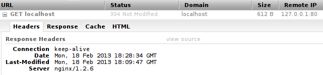

Introducción
Para los que no hayan escuchado hablar de Nginx, decir que se trata de un servidor web y proxy inverso de código abierto ligero de alto rendimiento,
que también incluye servicios de correo electrónico con acceso al Internet Message Protocol (IMAP) y al servidor Post Office Protocol (POP). Además, NGINX está listo para
ser utilizado como un proxy inverso. En este modo, NGINX se utiliza para equilibrar la carga entre los servidores back-end, o para proporcionar almacenamiento en caché para un
servidor back-end lento.
Hasta bien poco, Apache era el rey indiscutible en el mundo de los servidores web, pero año tras año, la popularidad de este
servidor web ha id en aumento y empresas punteras de Internet como Facebook o WordPress lo utilizan en sus portales.

Según un estudio llevado a cabo por el portal Netcraft, a principios de septiembre de 2013 la cuota de mercado Nginx ascendía
al 15,11%, situándolo en tercera posición detrás de Apache y IIS de Microsoft.
Al igual que ocurre con Apache, Nginx posee muchas funcionalidades implementadas modularmente que sólo hay que habilitarlas cuando
se vayan hacer uso de ellas.
Son muchas las características que nos ofrece este servidor web, pero una de las más importantes es que se trata de un software
que es asíncrono, a diferencia de Apache que está basada en procesos. La ventaja principal de ser asíncrono, es su
escalabilidad. En un sistema basado en procesos, cada conexión simultánea requiere de un hilo, lo que puede llevar a
sobrecargar el servidor, mientras que en un servidor asíncrono se gestionan las peticiones en muy pocos hilos, reduciendo las
posibilidades de sobrecarga en el servidor.
Otras características que ofrece el servidor Nginx son:
-Capaz de manejar más de 10.000 conexiones simultáneas con un uso bajo de memoria.
-Balanceo de carga, distribuye la carga entre los servidores que formen parte de la estructura,
redirigiendo cada vez la petición hacia aquella máquina que tenga una menor carga.
-Alta tolerancia a fallos.
-Soporte para TSL, SSL, FastCGI, SCGI o uWSGI, entre otros.
-Compatible con el nuevo estándar de direcciones IPv6.
-Compresión y descompresión con Gzip, que permite comprimir al vuelo los archivos y datos que se mueven por la red,
desde el servidor web hasta el navegador del usuario
-Reescritura de urls, para crear urls amigables que nos ayuden en el proceso del posicionamiento web, aunque a diferencia
de Apache, Nginx no hace uso del fichero .htaccess, sino que las reglas de reescritura las carga directamente en su configuración.
-Permite limitar el número de conexiones concurrentes.
-Geolocalización basada en direcciones IP
Además de lo comentado anteriormente, Nginx puede almacenar contenido estático como imágenes con lo que se quita
carga a los servidores web, mejorando la velocidad de carga de las páginas.

Descarga
A lo largo de la guía encontrarás detalladamente qué archivos son los necesarios para la instalación del servidor Nginx y cuándo utilizarlos,
así como del módulo PHP. Te dejamos a continuación en esta sección todos los necesarios:
Dependencias: # apt-get install build-essential libssl-dev libpcre3-dev
Nginx: $ wget http://nginx.org/download/nginx-1.2.6.tar.gz
PHP: # apt-get install php5-fpm

Instalación
Nginx está pensado para ser instalado en cualquier servidor dedicado, estructura cloud o VPS, ya que es necesario tener acceso
como administrador para poder llevar a cabo la instalación de este servidor web.
En nuestro ejemplo veremos el proceso de instalación de Nginx en un servidor con sistema operativo Linux, aunque el proceso
de instalación en otro sistema operativo es muy parecido.
Una vez logueados como administradores, antes de poder compilar nginx, es necesario instalar unos cuantos paquetes y dependencias:
# apt-get install build-essential libssl-dev libpcre3-dev
El paquete build-essential contiene las herramientas básicas para compilar programas desde código fuente, las otras dos
librerías son necesarias para nginx durante el proceso de compilación.
Descargar y compilar Nginx:
$ wget http://nginx.org/download/nginx-1.2.6.tar.gz
Descomprimimos el fichero:
$ tar zxvf nginx-1.2.6.tar.gz
Una vez descomprimido, entramos en el directorio y compilamos:
$ cd nginx-1.2.6
~/nginx-1.2.6$ ./configure --sbin-path=/usr/local/sbin --with-http_ssl_module --without-mail_pop3_module --without-mail_imap_module --without-mail_smtp_module --with-http_stub_status_module
~/nginx-1.2.6$ make
~/nginx-1.2.6$ sudo make install
Para consultar qué modulos hay disponibles hay que visitar la pagina oficial de Nginx (Ir)
y decidir cuáles queremos habilitar. Con la opción --sbin-path=/usr/local/sbin establecemos la ruta en la que se instalará el
ejecutable. Tras compilar se mostrará información de la localización de los distintos ficheros:
nginx path prefix: "/usr/local/nginx"
nginx binary file: "/usr/local/sbin"
nginx configuration prefix: "/usr/local/nginx/conf"
nginx configuration file: "/usr/local/nginx/conf/nginx.conf"
nginx pid file: "/usr/local/nginx/logs/nginx.pid"
nginx error log file: "/usr/local/nginx/logs/error.log"
nginx http access log file: "/usr/local/nginx/logs/access.log"
nginx http client request body temporary files: "client_body_temp"
nginx http proxy temporary files: "proxy_temp"
nginx http fastcgi temporary files: "fastcgi_temp"
nginx http uwsgi temporary files: "uwsgi_temp"
nginx http scgi temporary files: "scgi_temp"
Es necesario descargar un script que permita detener, reiniciar e iniciar nginx, podemos descargar el siguiente:
$ wget https://raw.github.com/JasonGiedymin/nginx-init-ubuntu/master/nginx
$ sudo mv nginx /etc/init.d/nginx
$ sudo chmod +x /etc/init.d/nginx
$ sudo chown root:root /etc/init.d/nginx
En el tercer comando otorgamos permiso de ejecución al script, con el cuarto hacemos al usuario root propietario del mismo
Si queremos que nginx se inicie automáticamente al iniciar el sistema, hay que añadirlo a los runlevel correspondientes:
# update-rc.d nginx defaults
Ahora estamos en condiciones de ejecutar nginx:
# /etc/init.d/nginx start
[ ok ] Starting Nginx Server...:.
Listo, nos dirigimos a nuestro navegador y escribimos en la barra de direcciones localhost. Si todo ha ido bien
deberíamos ver esta pantalla:
Usando firebug se puede comprobar que efectivamente se está corriendo un servidor nginx:


Configuración
Sustituimos la configuración por defecto por esta:
Versión para copiar y pegar:
Los cambios más relevantes sobre la configuración por defecto son:
-Se ha cambiado el usuario del servidor de “*nobody*” a “*www-data*”, éste último es el usuario por defecto para servidores webs
-Se define el archivo donde se localizará el PID (Process ID) del servidor. Esto permite al script que hemos instalado iniciar o detener nginx.
-Se habilita la compresión gzip para reducir el ancho de banda consumido.
-Se define el formato que tendrán los ficheros de log.
Cambiamos los permisos de los ficheros que contienen la web y reiniciamos nginx para aplicar los cambios:
$ sudo chown -R www-data:www-data html/
$ sudo service nginx destroy && sudo service nginx start

Módulo PHP
En lugar de instalar php5, instalaremos php5-fpm (FastCGI Process Manager), una implementación alternativa con algunas características
adicionales.
En ubuntu, ejecutamamos el siguiente comando:
# apt-get install php5-fpm
En debian agregamos el repositorio al sources.list:
deb http://packages.dotdeb.org stable all
deb-src http://packages.dotdeb.org stable all
Agregamos la llave GnuPG del repositorio:
apt-get update
wget http://www.dotdeb.org/dotdeb.gpg
cat dotdeb.gpg | sudo apt-key add -
Instalamos php:
# apt-get install php5-cli php5-suhosin php5-fpm php5-cgi php5-mysql
Lo iniciamos:
# /etc/init.d/php5-fpm start
Para lograr que nginx interprete php, hay que hacer algunas modificaciones a la configuración:


Versión para copiar y pegar:
Los principales cambios realizados son los siguientes:
-Se ha añadido index.php antes de index.html index.htm para dar prioridad a los archivos php.
-El bloque upstream php que apunta a PHP-FPM.
-Un manejador para archivos php location ~ \.php$
Para terminar, añadimos los siguientes parámetros al final del archivo /usr/local/nginx/fastcgi_params:
fastcgi_connect_timeout 60;
fastcgi_send_timeout 180;
fastcgi_read_timeout 180;
fastcgi_buffer_size 128k;
fastcgi_buffers 4 256k;
fastcgi_busy_buffers_size 256k;
fastcgi_temp_file_write_size 256k;
fastcgi_intercept_errors on;
Para aplicar los cambios, reiniciamos nginx:
# service nginx restart
Con esto, deberíamos tener instalado un servidor corriendo con nginx y ejecutando archivos php.
Fuentes: Fuente 1,
Fuente 2